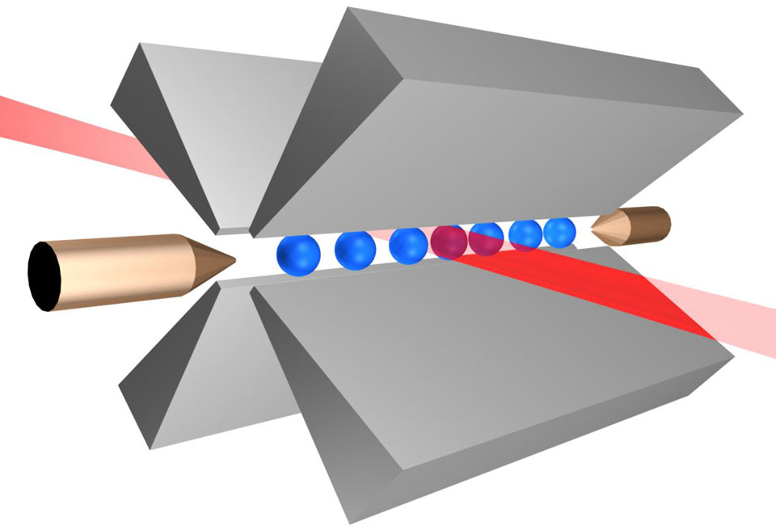

Dificuldades(){
i++
Por: Suelen Cristina Cremonini
Problemas enfrentados na construção de um computador quântico

Íons em um campo eletromagnético.
David P. DiVincenzo, pesquisador da IBM, citou 5 problemas essenciais na construção de um computador quântico:
1. Um sistema físico escalável com qubits bem caracterizados – É necessário medir o sistema e compreender as características de cada qubit (como correlação e estado de superposição) para poder-se operar em cima dos registradores. Isso é muito difícil, dado que a exposição à medição já é o suficiente para perturbar o sistema e que ainda se é impossível medir algumas características com precisão, como correlação. Deve-se conhecer o mecanismo para se manipular os qubits, assim como suas características internas. Vários métodos já foram propostos e alguns até demonstrados, como ion-traps (utilizando íons em um campo eletromagnético, onde os íons são interceptados permanecendo praticamente congelados numa certa região do espaço, sendo assim, é possível obter medidas com praticamente 100% de eficiência) ou ressonância magnética nuclear com átomos.
2. Inicialização dos estados dos qubits – Para poder realizar qualquer operação, é necessário saber qual o estado inicial do registrador. Ele também tem aplicações na correção de erro quântico. É possível realizar a inicialização através de uma medição, que fará o sistema se colapsar em um determinado estado que, se não for o estado inicial desejado, pode ser convertido nele. A velocidade com que é possível inicializar um qubit é vital e pode limitar a velocidade de todo o sistema.
3. Conjunto universal de portas quânticas – As portas quânticas existentes devem ser capazes de realizar todas as transformações possíveis. É importante notar que portas quânticas não podem ser implementadas perfeitamente; elas também podem causar erros. Contudo, tais erros podem ser contornados com o mesmo mecanismo de correção de erro usado para a decoerência.
4. Leitura específica de qubits – O requisito mais óbvio, o qubit tem que ser lido no final, e a maneira de fazer isso é extremamente complicada, por se tratar de um sistema cuja menor instabilidade pode alterar o resultado. Há também o fato de ser impossível ler o estado real do qubit, pois o estado é probabilístico. O que se obtém é um valor aleatório, que segue as regras probabilísticas de seu estado real. Este fator também é importante na correção de erro quântico.
5. Tempos de decoerência muito altos, muito maior que o tempo das portas lógicas - O tempo de decoerência é o tempo que um qubit consegue manter seu estado coerente. Depois desse tempo, o dado no qubit já não é mais o esperado, o que torna inútil qualquer outra operação em cima deste. O atual problema é que as operações das portas lógicas têm que ocorrer em tempo muito menor que o tempo de decoerência, caso contrário o resultado da porta lógica será incorreto. De fato, acreditava-se que a decoerência impedia definitivamente a construção de computadores quânticos, até que Peter Shor provou que era possível a realização da correção de erro quântico através de códigos de correção de erro.
Sendo este último o principal problema para a construção de um computador quântico, no que se refere ao isolamento perfeito, pois qualquer alteração de campo magnético, como um choque de moléculas de ar, por exemplo, poderá fazer um fóton - minúsculas partículas elementares que constituem a luz - aleatório transformar o estado de sobreposição dos qubits de 0 e 1 para 0 ou 1, processo este chamado de decoerência, ou seja, quando o qubit está com os dois valores possíveis, ele está no estado chamado coerência, caso sofra qualquer interação (medição, por exemplo), ele adquirá apenas um resultado: 0 ou 1 e passará ao estado de decoerência.

Deslocamento de um elétron após incidir energia/luz sobre ele.
O problema da decoerência durante a medição do estado do qubit é chamado de incerteza de Heisenberg: ao medir a posição de um elétron, quanto mais precisamente tentamos medi-la, mais deslocamos o elétron, portanto, mais imprecisa é a medida. Por exemplo, para medir a posição de um elétron, podemos vê-lo, mas para isso, é necessário iluminá-lo, logo, temos que incidir luz sobre ele. Os fótons têm energia proporcional à frequência da luz, portanto, para iluminar o elétron, precisamos incidir sobre ele um fóton carregado de energia. No entanto, para isso, o fóton tem que se chocar com o elétron, modificando então sua posição inicial e sua velocidade.
Porém, a dificuldade mostrada pela decoerência já foi superada através de algoritmos de correção de erros, chamados Coerência de Fase. Trata-se de uma técnica que corrige em nível lógico um erro de nível físico sem comprometer o sistema. Para tanto, é utilizada a ressonância magnética nuclear para copiar um único bit de informação quântica de três spins nucleares de moléculas de tricloroetileno. Basicamente, a técnica utiliza a observação indireta para efetuar a correção de erros e manter a coerência do sistema. Por outro lado, o meio encontrado para efetuar a correção dos erros se torna mais complexo a cada aumento no número de qubits do computador.
Referências:
Instituto de Informatica UFRGS
Brasil Escola
Instituto de Computação - Unicamp
Instituto de Computação - Unicamp
InfoEscola
}